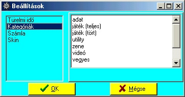

Beállítások
Alapértelmezett
ikonja: |
|
| Pillanatkép: |
 |
A bal oldalon eloször ki kell választanod, hogy minek az adatait akarod állítani, kattints rá,
ekkor a jobb oldalon megjelennek annak a beállítható tulajdonságai.
Az elsõ lapon a "Türelmi idõt" állíthatod be, és az azzal kapcsolatos dolgokat. A türelmi idõ
letelte után legkésobb a visszakapáskor a program figyelmeztet, hogy ez meg az a CD ennél meg
annál annyi napnál tovább volt. Ezenkívül kiírja, hogy hány napos a késés, és hogy ez hány
forint késési díjat jelent. A gombok szerintem magukért beszélnek. Az alapbeállítások
visszaállítása elott megerõsítést kér!
A második lapon a kategóriákat állíthatod be, amikbe besorolhatod a CD-idet. Mindegy, hogy
milyen sorrendben vannak, a kategória-választó lenyíló listában ábécé-sorrendbe lesznek rakva.
A harmadik lapon a számla nyomtatásához szükséges adatokat lehet beállítani (ha nem állítod be,
a nyomtatásnál szólni fog!).
A negyedik lapon a kívánt "bõrt" választhatod ki.
Az ötödik lapon találhatók az általános beállítások, mint a kilépési effekt tulajdonságai
(ki- vagy be van-e kapcsolva, ill. az "óra"-szerû eltûnés lépésköze (magyarul: hány részre
ossza a form oldalait, mert a részek között ugrál, ha 1-re állítod marha gyors, ha 1000-re,
marha lassú lesz.)